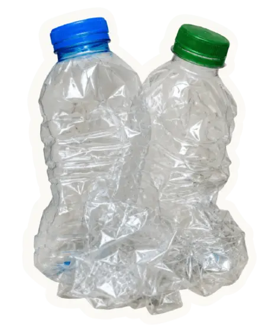
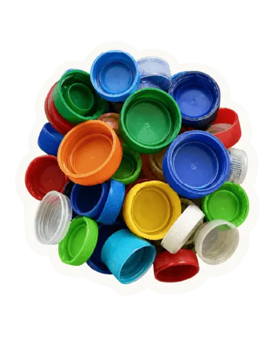
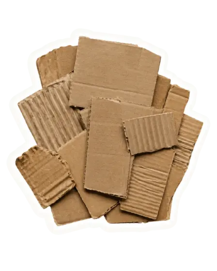
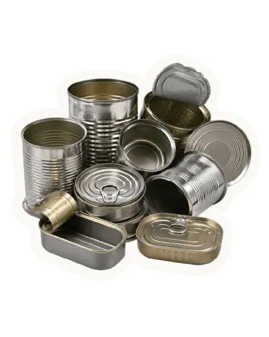
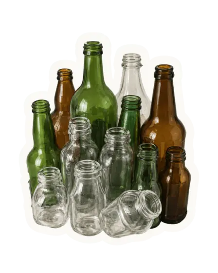
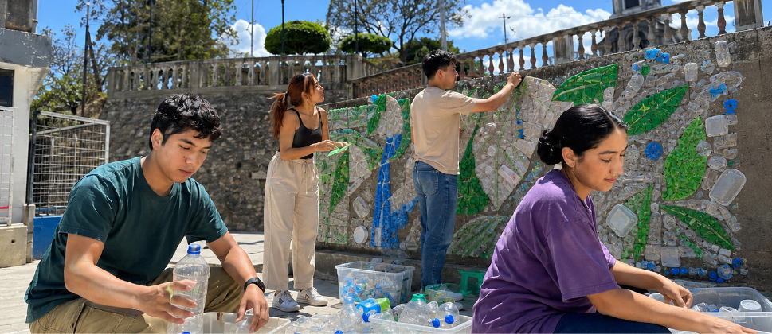
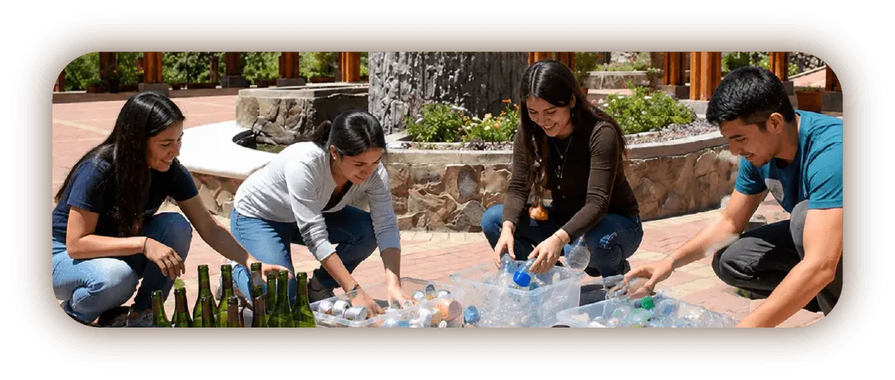

Observar
Identificamos residuos, espacios urbanos y problemáticas visuales o ambientales que pueden transformarse.
ReKrea es una propuesta creativa que busca cambiar la forma en que las personas ven los residuos. La iniciativa plantea que materiales como botellas, tapas, cartón, latas y otros pueden tener una segunda vida si se separan, se reutilizan y se integran en intervenciones artísticas.
A través del arte, ReKrea convierte los residuos en mensajes visuales capaces de generar conciencia, recuperar espacios y motivar la participación ciudadana.
Cada intervención de ReKrea nace de un proceso colectivo. Antes de crear una obra, se observa el entorno, se identifican materiales reutilizables, se imaginan posibilidades y se construye una propuesta artística con impacto social.
Identificamos residuos, espacios urbanos y problemáticas visuales o ambientales que pueden transformarse.

Reconocemos materiales reciclables que pueden tener una segunda vida, como botellas, tapas, cartón, latas y vidrio.

Pensamos cómo esos residuos pueden convertirse en formas, colores, texturas o mensajes artísticos.
Se crea una propuesta de diseño para intervenciones urbanas con apoyo de artistas, voluntarios y la comunidad.
Difundimos el proceso y el resultado para inspirar conciencia ambiental y participación ciudadana.
Antes de transformar un espacio, ReKrea busca transformar la manera en que miramos los residuos.
No todo residuo es basura, estos son algunos materiales que pueden convertirse en parte de una obra si están limpios, secos y separados correctamente.

Pueden aportar volumen, transparencia, estructura y movimiento visual.

Pueden aportar volumen, transparencia, estructura y movimiento visual.

Puede aportar volumen, transparencia, estructura y movimiento visual.

Pueden aportar volumen, transparencia, estructura y movimiento visual.

Puede aportar volumen, transparencia, estructura y movimiento visual.
ReKrea crece con artistas, voluntarios, ciudadanos, estudiantes, colectivos y aliados que quieran transformar residuos en arte urbano.
Puedes proponer obras, murales, esculturas o instalaciones con materiales reciclables.

Quiero ser artistaNos apoyas con la recolección, organización, difusión y actividades comunitarias.

Quiero ser voluntario